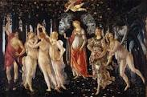

Hong Kong, PRC
I would describe this city as a woman well past her prime, but dressed to the nines and fighting father time with everything she has. Amazing food, amazing shopping, and incredible sites. The culture you can absorb by getting lost in this incredible city is priceless. Take the ferry to Macau and visit the "Las Vegas" of the East. You will never regret the decision to visit this amazing city.
Budapest, Hungary
FOOD. FOOD. FOOD. Seriously this city has so much to offer. It is a bit off the beaten path, the "other" Prague, if you will. Though to my thinking it is WAY cooler than Prague. And the goulash! I literally eat it for every meal when visiting! Palinka is the local liquor-very potent, supposedly fruit based, but honestly all I tasted was death haha, seriously strong!!
London, UK
What can I say about London. If I had a soul-city it would be London I believe. Its big, small, old, new, proper, and so odd. I love the museums, and they are all FREE! The culture, the bier, the hard cider, and oh my gosh the macaroni and cheese! I love every filthy section of this city. from the seedy to the posh.
Florence, Italy
Florence was always my favorite city growing up. The Uffizi is one of the most amazing art galleries in the world. Home of both of my favorite paintings, "La Primavera" and "The birth of Venus", both by Botticelli. This is a slower paced city, that requires you to walk, and walk, and walk...but it is worth every step. You never know when you will find an incredible little cafe, gelateria, or bar. 
Cologne, Germany
Also known as Koeln, this city is well known for several things. From the largest gothic style church in Europe, to the delightful chocolate factory, and the final resting place of the Three Kings Link To Three Wise Kings Article from the Bible. A gorgeous city with a fascinating past, incredible bier, and a lovely culture all its own.